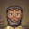
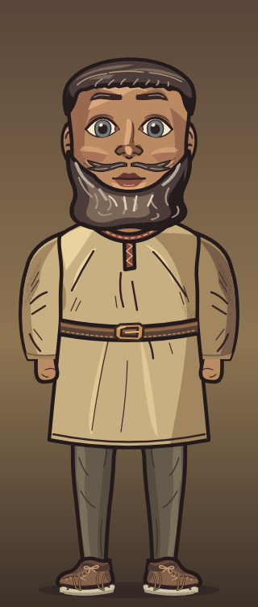

<!doctype html><html lang="ru"><meta charset="utf-8"><meta name="viewport" content="width=device-width,initial-scale=1"><title>Оснастка обуви · отделка</title><style>body{font:16px system-ui;background:#25201b;color:#eee2cd;margin:0 auto;max-width:1280px;padding:1rem}
    a{color:#f4ca91}h1,h2{font:700 1.7rem Georgia,serif}nav ul{columns:3}.grid{display:grid;gap:1rem;
    grid-template-columns:repeat(auto-fit,minmax(230px,1fr))}article{min-width:0;border:1px solid #655343;
    background:#312821;padding:.6rem;border-radius:5px}a img{vertical-align:middle}img{max-width:100%;height:auto}
    .character{display:block;max-height:460px;width:auto;margin:auto}.card{width:32px;height:32px}
    .detail{display:block;width:100%;margin:.35rem 0}.compare{display:flex;align-items:flex-start;gap:.5rem}
    .compare a{flex:1;min-width:0}small{color:#dccab0}code{overflow-wrap:anywhere}@media(max-width:730px){nav ul{columns:1}}</style><main><nav><a href="index.html">Все разделы</a></nav><h1>Оснастка обуви · отделка</h1><div class="grid"><article id="material__shoe_accessory_trim_material__image_bone_skates__leather"><h3>Выделанная кожа</h3><code>leather</code><a href="images/b156b06dd63e68a6624f30568441506620f0381fc10a7b0aaa8c2023640a0ebb.png"></a><p><a href="images/c670840151c7f02aa95ae95ffb26b65f429e7c3483ab2eaeb0a38f2ab37ce9b5.png"></a> <small>32 × 32</small></p><details><summary>До и после</summary><div class="compare"><span>До<a href="images/eb778470c0fedb1f7a123cfe995f655db64a869ef52c8910ed04f76dd3575ccd.png"></a></span><span>После<a href="images/b156b06dd63e68a6624f30568441506620f0381fc10a7b0aaa8c2023640a0ebb.png"></a></span></div></details></article>
<article id="material__shoe_accessory_trim_material__auto"><h3>По фасону</h3><code>auto</code><a href="images/b156b06dd63e68a6624f30568441506620f0381fc10a7b0aaa8c2023640a0ebb.png"></a><p><a href="images/c670840151c7f02aa95ae95ffb26b65f429e7c3483ab2eaeb0a38f2ab37ce9b5.png"></a> <small>32 × 32</small></p><details><summary>До и после</summary><div class="compare"><span>До<a href="images/eb778470c0fedb1f7a123cfe995f655db64a869ef52c8910ed04f76dd3575ccd.png"></a></span><span>После<a href="images/b156b06dd63e68a6624f30568441506620f0381fc10a7b0aaa8c2023640a0ebb.png"></a></span></div></details></article></div></main></html>
